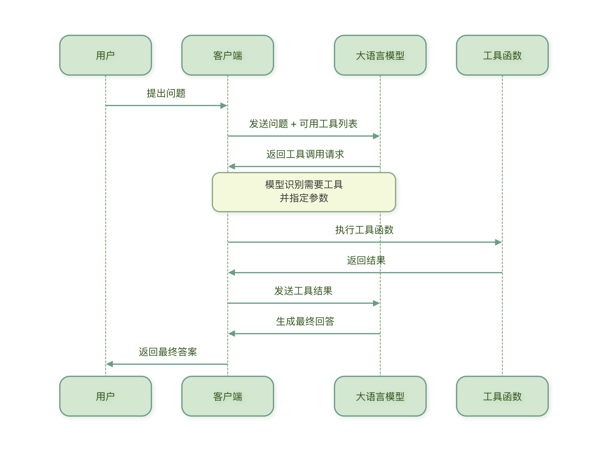
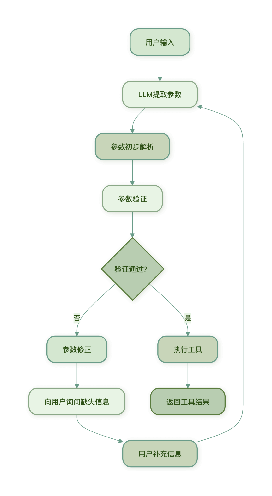

Tool Calling
Function Calling is the core mechanism that enables LLMs to use external tools.
Function Calling allows the model to decide when to call tools, which tool to call, and what parameters to pass.
Why is Function Calling needed?
Imagine that an LLM is a smart but unarmed consultant. It knows a lot, but cannot:
- Obtain real-time information (such as latest weather, stock prices)
- Perform calculations (such as complex mathematical operations).
- Operate external systems (such as sending emails, reading/writing files)
Function Calling provides LLM with hands, enabling it to break through its own limitations and execute real tasks.
The working principle of Function Calling.
The basic flow of Function Calling is as follows:

Core concept
- Tool definitionDescribe the function, parameters, and return value of a tool.
- Tool selection: LLM selects the appropriate tool based on the user's question.
- Parameter extraction: : The LLM extracts the parameters required by the tool from the question.
- Result processing:将工具执行结果整合到最终回答中
Example explanation
假设我们有一个查询天气的工具，当用户问北京今天天气如何？时：
- LLM 识别出需要调用天气查询工具
- 从问题中提取参数：
city="北京",date="今天" - 调用天气 API 获取数据
- 将天气数据整合成友好的回答返回给用户
Tool definition and description authoring
要让 LLM 正确使用工具，首先需要清晰地定义工具，好的工具定义应该像一份清晰的说明书，让 LLM 明白：
- 这个工具是做什么的？
- 什么时候使用它？
- 需要什么参数？
- 参数是什么格式？
The structure of tool definitions.
一个完整的工具定义通常包含以下部分：
Example
weather_tool = {
"name": "get_weather", # 工具名称
"description": "获取指定城市的天气信息", # 工具描述
"parameters": { # 参数定义
"type": "object",
"properties": {
"city": {
"type": "string",
"description": "城市名称，如'北京'、'上海'"
},
"date": {
"type": "string",
"description": "日期，格式'YYYY-MM-DD'，或'今天'、'明天'",
"enum": ["今天", "明天", "后天"]
}
},
"required": ["city"] # 必填参数
}
}
Write high-quality tool descriptions.
1. 描述要清晰具体
- 不好的描述：查询天气
- 好的描述：获取指定城市在特定日期的天气信息，包括温度、湿度、风速和天气状况（晴、雨、多云等）
2. 参数描述要详细
不好的参数描述：
"city": {"type": "string"}
好的参数描述：
"city": {
"type": "string",
"description": "完整的城市名称，如'北京市'、'上海市'。不要使用简称或拼音。"
}
3. 使用枚举限制选项
对于有限的选项，使用枚举（enum）帮助 LLM 理解：
"unit": {
"type": "string",
"description": "温度单位",
"enum": ["celsius", "fahrenheit"],
"default": "celsius"
}
4. 提供示例值
在描述中提供示例，帮助 LLM 理解格式：
"date": {
"type": "string",
"description": "日期，格式应为'YYYY-MM-DD'，例如'2024-06-15'"
}
Utility definition example
1. 计算器工具
calculator_tool = {
"name": "calculate",
"description": "执行数学计算，支持加减乘除、幂运算等基本运算",
"parameters": {
"type": "object",
"properties": {
"expression": {
"type": "string",
"description": "数学表达式，如'2 + 3 * 4'、'sqrt(16)'、'sin(30)'"
}
},
"required": ["expression"]
}
}
2. 搜索工具
search_tool = {
"name": "search_web",
"description": "在互联网上搜索最新信息",
"parameters": {
"type": "object",
"properties": {
"query": {
"type": "string",
"description": "搜索关键词，尽量具体明确"
},
"num_results": {
"type": "integer",
"description": "返回结果数量，默认为5",
"default": 5,
"minimum": 1,
"maximum": 10
}
},
"required": ["query"]
}
}
3. 文件操作工具
file_tool = {
"name": "read_file",
"description": "读取指定文件的内容",
"parameters": {
"type": "object",
"properties": {
"file_path": {
"type": "string",
"description": "文件的完整路径，如'/home/user/document.txt'"
},
"encoding": {
"type": "string",
"description": "文件编码，默认为'utf-8'",
"default": "utf-8"
}
},
"required": ["file_path"]
}
}
Best practices for tool definitions.
- 名称简洁明确：使用动词开头，如
get_、calculate_、search_ - 描述完整详细：说明工具的用途、适用场景和限制
- 参数验证充分：定义参数类型、范围、格式要求
- 提供默认值: Provide reasonable default values for optional parameters
- Consider error cases: Describe possible errors and limitations in the description
Tool definition validation
After defining a tool, validation tests should be performed:
def validate_tool_definition(tool_def):
"""验证工具定义是否完整"""
required_fields = ["name", "description", "parameters"]
for field in required_fields:
if field not in tool_def:
return False, f"缺少必要字段: {field}"
# 检查参数结构
if "properties" not in tool_def["parameters"]:
return False, "参数定义缺少properties字段"
return True, "工具定义完整"
# 测试验证
is_valid, message = validate_tool_definition(weather_tool)
print(f"验证结果: {is_valid}, 消息: {message}")
Parameter extraction and validation.
After the LLM extracts parameters from the user's question, these parameters need to be validated and processed to ensure the tool can execute correctly.
Parameter extraction process
When the LLM decides to call a tool, it analyzes the user input and extracts the parameters required by the tool:
用户输入: "查询北京明天的天气温度"
工具: get_weather
提取参数: {"city": "北京", "date": "明天"}
Challenges in parameter extraction
Parameter extraction may encounter the following issues:
- Missing information: The user did not provide all necessary information
- Format mismatch: The format provided by the user does not match the tool requirements
- Ambiguity resolution: The same information may have multiple interpretations
- Context dependence: Parameters need to be understood in the context of the conversation history
Parameter validation method
1. Type validation
Ensure that the parameter types meet the requirements:
def validate_parameters(params, tool_def):
"""验证参数类型"""
errors = []
for param_name, param_def in tool_def["parameters"]["properties"].items():
if param_name in params:
param_value = params[param_name]
expected_type = param_def.get("type")
# 类型检查
if expected_type == "string" and not isinstance(param_value, str):
errors.append(f"参数'{param_name}'应为字符串类型")
elif expected_type == "integer" and not isinstance(param_value, int):
errors.append(f"参数'{param_name}'应为整数类型")
elif expected_type == "number" and not isinstance(param_value, (int, float)):
errors.append(f"参数'{param_name}'应为数字类型")
elif expected_type == "boolean" and not isinstance(param_value, bool):
errors.append(f"参数'{param_name}'应为布尔类型")
return errors
```
2. Range validation
Check whether the parameter values are within the allowed range:
def validate_range(params, tool_def):
"""验证参数范围"""
errors = []
for param_name, param_def in tool_def["parameters"]["properties"].items():
if param_name in params:
param_value = params[param_name]
# 检查最小值
if "minimum" in param_def and param_value < param_def["minimum"]:
errors.append(f"参数'{param_name}'不能小于{param_def['minimum']}")
# 检查最大值
if "maximum" in param_def and param_value > param_def["maximum"]:
errors.append(f"参数'{param_name}'不能大于{param_def['maximum']}")
# 检查枚举值
if "enum" in param_def and param_value not in param_def["enum"]:
errors.append(f"参数'{param_name}'必须是{param_def['enum']}中的一个")
return errors
3. Required parameter validation
Ensure that all required parameters have been provided:
def validate_required(params, tool_def):
"""验证必填参数"""
errors = []
required_params = tool_def["parameters"].get("required", [])
for param_name in required_params:
if param_name not in params:
errors.append(f"缺少必填参数: {param_name}")
return errors
Complete parameter validation system
Example
"""Parameter validator"""
def __init__(self, tool_def):
self.tool_def = tool_def
def validate(self, params):
"""Perform complete parameter validation"""
all_errors = []
# Check required parameters
required_errors = self.validate_required(params)
all_errors.extend(required_errors)
# Check parameter types
type_errors = self.validate_type(params)
all_errors.extend(type_errors)
# Check parameter ranges
range_errors = self.validate_range(params)
all_errors.extend(range_errors)
# Check for extra parameters (undefined parameters)
extra_errors = self.validate_extra(params)
all_errors.extend(extra_errors)
return len(all_errors) == 0, all_errors
def validate_required(self, params):
"""Validate required parameters"""
errors = []
required_params = self.tool_def["parameters"].get("required", [])
for param_name in required_params:
if param_name not in params or params[param_name] is None:
errors.append(f"Missing required parameter: {param_name}")
return errors
def validate_type(self, params):
"""Validate parameter types"""
errors = []
for param_name, param_value in params.items():
if param_name in self.tool_def["parameters"]["properties"]:
param_def = self.tool_def["parameters"]["properties"][param_name]
expected_type = param_def.get("type")
if expected_type == "string" and not isinstance(param_value, str):
errors.append(f"Parameter '{param_name}' should be string type, but is {type(param_value).__name__}")
elif expected_type == "integer" and not isinstance(param_value, int):
errors.append(f"Parameter '{param_name}' should be integer type, but is {type(param_value).__name__}")
elif expected_type == "number" and not isinstance(param_value, (int, float)):
errors.append(f"Parameter '{param_name}' should be numeric type, but is {type(param_value).__name__}")
elif expected_type == "boolean" and not isinstance(param_value, bool):
errors.append(f"Parameter '{param_name}' should be boolean type, but is {type(param_value).__name__}")
return errors
def validate_range(self, params):
"""Validate parameter ranges"""
errors = []
for param_name, param_value in params.items():
if param_name in self.tool_def["parameters"]["properties"]:
param_def = self.tool_def["parameters"]["properties"][param_name]
# Check minimum value
if "minimum" in param_def and param_value < param_def["minimum"]:
errors.append(f"Parameter '{param_name}' cannot be less than {param_def['minimum']}")
# Check maximum value
if "maximum" in param_def and param_value > param_def["maximum"]:
errors.append(f"Parameter '{param_name}' cannot be greater than {param_def['maximum']}")
# Check enum values
if "enum" in param_def and param_value not in param_def["enum"]:
errors.append(f"Parameter '{param_name}' must be one of {param_def['enum']}")
return errors
def validate_extra(self, params):
"""Check for undefined extra parameters"""
errors = []
defined_params = set(self.tool_def["parameters"]["properties"].keys())
provided_params = set(params.keys())
extra_params = provided_params - defined_params
if extra_params:
errors.append(f"Undefined parameters provided: {', '.join(extra_params)}")
return errors
# Usage example
validator = ParameterValidator(weather_tool)
params = {"city": "Beijing", "date": "tomorrow", "extra": "parameter that shouldn't exist"}
is_valid, errors = validator.validate(params)
if is_valid:
print("Parameter validation passed")
else:
print("Parameter validation failed:")
for error in errors:
print(f" - {error}")
The complete workflow for parameter extraction and validation.

Parameter correction strategy
When parameter validation fails, the following strategies can be adopted:
- Ask the user: Directly ask the user for missing or incorrect parameters
- Use default values: For optional parameters, use predefined default values
- Intelligent inference: Infer reasonable parameter values based on context
- Format conversion: Convert the format provided by the user to the format required by the tool
def fix_parameters(params, errors, tool_def):
"""尝试修正参数错误"""
fixed_params = params.copy()
for error in errors:
if "缺少必填参数" in error:
param_name = error.split(": ")[1]
# 尝试从上下文推断或使用默认值
if param_name == "date":
fixed_params[param_name] = "今天" # 使用当天作为默认值
elif "应为字符串类型" in error:
param_name = error.split("'")[1]
# 尝试转换为字符串
fixed_params[param_name] = str(params[param_name])
return fixed_params
Error handling and retry mechanism.
In practical applications, tool calls may fail. A robust error handling and retry mechanism is key to building a reliable AI Agent.
Common tool calling errors
- Network errors: API call timeout, connection failure
- Parameter errors: Parameter validation failure, incorrect format
- Permission errors: Invalid API key, insufficient permissions
- Resource errors: Service unavailable, call limit reached
- Logic errors: Internal logic errors in the tool
Error handling strategy
1. Tiered error handling
Adopt different handling strategies based on the error type:
class ErrorHandler:
"""错误处理器"""
def handle(self, error, context):
"""处理错误"""
error_type = self.classify_error(error)
if error_type == "network":
return self.handle_network_error(error, context)
elif error_type == "parameter":
return self.handle_parameter_error(error, context)
elif error_type == "authentication":
return self.handle_auth_error(error, context)
elif error_type == "resource":
return self.handle_resource_error(error, context)
else:
return self.handle_unknown_error(error, context)
def classify_error(self, error):
"""分类错误类型"""
error_str = str(error).lower()
if any(word in error_str for word in ["timeout", "connection", "network"]):
return "network"
elif any(word in error_str for word in ["parameter", "invalid", "missing"]):
return "parameter"
elif any(word in error_str for word in ["auth", "key", "permission"]):
return "authentication"
elif any(word in error_str for word in ["limit", "quota", "unavailable"]):
return "resource"
else:
return "unknown"
def handle_network_error(self, error, context):
"""处理网络错误"""
return {
"success": False,
"error": "网络连接失败，请检查网络后重试",
"retryable": True,
"retry_after": 5 # 5秒后重试
}
def handle_parameter_error(self, error, context):
"""处理参数错误"""
return {
"success": False,
"error": f"参数错误: {str(error)}",
"retryable": False,
"suggestion": "请检查输入参数是否正确"
}
# 其他错误处理方法类似...
2. User-friendly error messages
Convert technical errors into messages that users can understand:
def user_friendly_error(error):
"""生成用户友好的错误消息"""
error_map = {
"timeout": "请求超时，请稍后重试",
"connection_error": "网络连接失败，请检查网络",
"invalid_api_key": "API 密钥无效，请检查配置",
"rate_limit_exceeded": "调用频率过高，请稍后再试",
"invalid_parameters": "输入参数不正确，请检查后重试"
}
error_str = str(error).lower()
for key, message in error_map.items():
if key in error_str:
return message
return "系统繁忙，请稍后重试"
Retry mechanism
For retryable errors, a smart retry strategy should be implemented:
1. Exponential backoff retry
import time
import random
class ExponentialBackoffRetry:
"""指数退避重试"""
def __init__(self, max_retries=3, base_delay=1, max_delay=30):
self.max_retries = max_retries
self.base_delay = base_delay
self.max_delay = max_delay
def retry(self, func, *args, **kwargs):
"""执行带重试的函数调用"""
last_error = None
for attempt in range(self.max_retries):
try:
return func(*args, **kwargs)
except Exception as e:
last_error = e
# 检查是否可重试
if not self.is_retryable(e):
raise
# 最后一次尝试，不再重试
if attempt == self.max_retries - 1:
break
# 计算等待时间（指数退避 + 随机抖动）
delay = min(
self.base_delay * (2 ** attempt) + random.uniform(0, 1),
self.max_delay
)
print(f"第{attempt + 1}次尝试失败，{delay:.1f}秒后重试...")
time.sleep(delay)
# 所有重试都失败
raise last_error
def is_retryable(self, error):
"""判断错误是否可重试"""
error_str = str(error).lower()
retryable_errors = ["timeout", "connection", "busy", "temporarily"]
for retryable_error in retryable_errors:
if retryable_error in error_str:
return True
return False
# 使用示例
retry = ExponentialBackoffRetry(max_retries=3)
def call_weather_api(city, date):
"""调用天气API（模拟可能失败）"""
# 模拟API调用
if random.random() < 0.3: # 30%概率失败
raise ConnectionError("API连接超时")
return {"temperature": 25, "condition": "晴"}
try:
result = retry.retry(call_weather_api, "北京", "今天")
print(f"成功获取天气: {result}")
except Exception as e:
print(f"获取天气失败: {e}")
```
2. Circuit breaker pattern
Prevent system avalanche caused by consecutive failures:
class CircuitBreaker:
"""熔断器"""
def __init__(self, failure_threshold=5, reset_timeout=60):
self.failure_threshold = failure_threshold
self.reset_timeout = reset_timeout
self.failure_count = 0
self.last_failure_time = None
self.state = "closed" # closed, open, half-open
def execute(self, func, *args, **kwargs):
"""通过熔断器执行函数"""
if self.state == "open":
# 检查是否应该尝试恢复
if self.should_try_reset():
self.state = "half-open"
else:
raise Exception("熔断器开启，服务暂时不可用")
try:
result = func(*args, **kwargs)
# 成功调用，重置状态
if self.state == "half-open":
self.state = "closed"
self.failure_count = 0
return result
except Exception as e:
self.record_failure()
raise e
def record_failure(self):
"""记录失败"""
self.failure_count += 1
self.last_failure_time = time.time()
if self.failure_count >= self.failure_threshold:
self.state = "open"
def should_try_reset(self):
"""检查是否应该尝试重置"""
if self.last_failure_time is None:
return True
elapsed = time.time() - self.last_failure_time
return elapsed > self.reset_timeout
# 使用示例
breaker = CircuitBreaker(failure_threshold=3, reset_timeout=30)
def unreliable_service():
"""模拟不可靠的服务"""
if random.random() < 0.5:
raise Exception("服务异常")
return "服务正常"
for i in range(10):
try:
result = breaker.execute(unreliable_service)
print(f"调用{i+1}: {result}")
except Exception as e:
print(f"调用{i+1}: {e}")
time.sleep(1)
Complete tool-calling framework
Combining all the above components, we can build a complete tool call framework:
Example
"""Tool executor"""
def __init__(self):
self.tools = {} # Registered tools
self.validator = ParameterValidator
self.error_handler = ErrorHandler()
self.retry = ExponentialBackoffRetry()
self.breaker = CircuitBreaker()
def register_tool(self, name, tool_def, func):
"""Register tool"""
self.tools[name] = {
"definition": tool_def,
"function": func
}
def execute_tool(self, tool_name, params):
"""Execute tool"""
if tool_name not in self.tools:
return {
"success": False,
"error": f"Tool '{tool_name}' not registered"
}
tool_info = self.tools[tool_name]
tool_def = tool_info["definition"]
tool_func = tool_info["function"]
# Validate parameters
validator = self.validator(tool_def)
is_valid, errors = validator.validate(params)
if not is_valid:
return {
"success": False,
"error": "Parameter validation failed",
"details": errors
}
# Execute via circuit breaker (with retry)
try:
def execute_with_retry():
return self.breaker.execute(
lambda: self.retry.retry(tool_func, **params)
)
result = execute_with_retry()
return {
"success": True,
"result": result,
"tool": tool_name
}
except Exception as e:
# Error handling
error_response = self.error_handler.handle(e, {
"tool": tool_name,
"params": params
})
return {
"success": False,
"error": error_response["error"],
"retryable": error_response.get("retryable", False),
"suggestion": error_response.get("suggestion", "")
}
def handle_user_request(self, user_input):
"""Process user request (simplified version)"""
# 1. Let the LLM select the tool and extract parameters (simplified here)
# In real applications, the LLM would be called here for tool selection and parameter extraction
# Simulate LLM output
if "weather" in user_input:
tool_name = "get_weather"
# Simply extract the city (in real applications the LLM would do better)
if "Beijing" in user_input:
params = {"city": "Beijing", "date": "today"}
elif "Shanghai" in user_input:
params = {"city": "Shanghai", "date": "today"}
else:
params = {"city": "Beijing", "date": "today"} # Default value
else:
return "Sorry, I cannot handle this request"
# 2. Execute tool
result = self.execute_tool(tool_name, params)
# 3. Generate final answer
if result["success"]:
weather = result["result"]
return f"{params['city']} weather today: {weather['condition']}, temperature {weather['temperature']}°C"
else:
return f"Failed to get weather information: {result['error']}"
# Usage example
executor = ToolExecutor()
# Register weather tool
def mock_weather_api(city, date):
"""Simulated weather API"""
# Simulate API call delay
time.sleep(0.1)
return {"temperature": 22, "condition": "Cloudy"}
executor.register_tool("get_weather", weather_tool, mock_weather_api)
# Process user request
response = executor.handle_user_request("How is the weather in Beijing today?")
print(response)
Click me to share notes.
<p style="font-size:14px;">Notes need to be an extension of the content of this article!</p><br> <p style="font-size:12px;"><a href="../tougao.html" target="_blank">Article submission, click here</a></p> <p style="font-size:14px;"><a href="../w3cnote/runoob-user-test-intro.html" target="_blank">How to get a registration invitation code</a></p> <h3 class="text-muted"><i class="fa fa-info-circle" aria-hidden="true"></i> Before sharing notes, you must <a href=";.html" class="runoob-pop">log in</a>!</h3> <p><a href="../w3cnote/runoob-user-test-intro.html" target="_blank">How to get a registration invitation code</a></p>